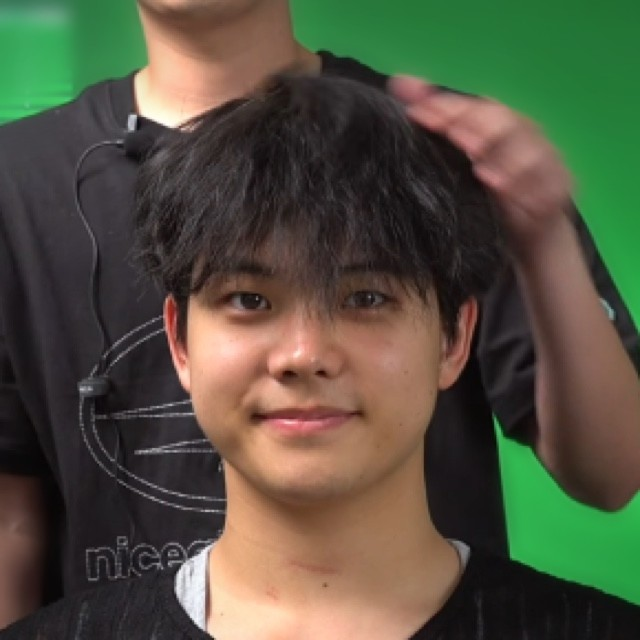
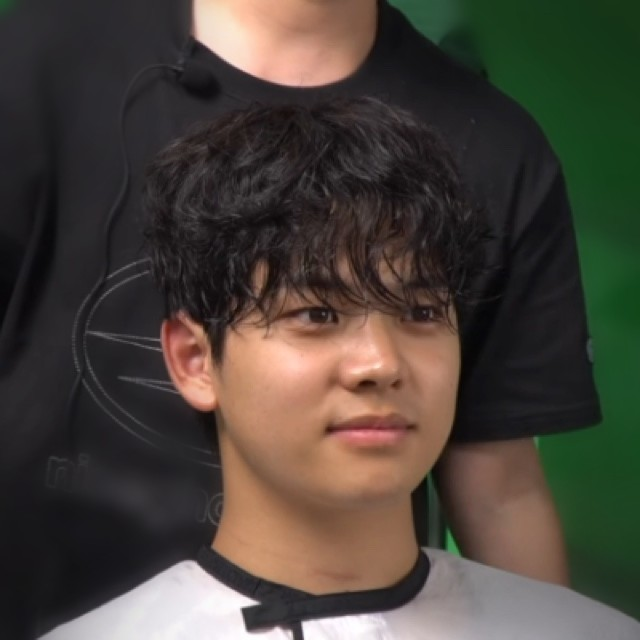
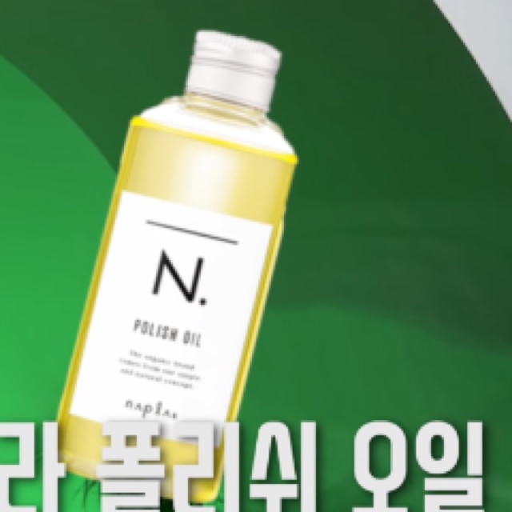

이 포스팅은 쿠팡 파트너스 활동의 일환으로, 이에 따른 일정액의 수수료를 제공받습니다.
← 진성쌤 제품 모음
HOLY PERM드라이할수록 풀리는 펌,
매일 아침 다시 펴고 있다면?

시술 전

마무리 후➜
이 차이를 만든 건
자연건조 + 오일 한두 방울
이 펌은 드라이를 오래 할수록 컬이 풀립니다. 두피만 말리고, 부스스함은 오일로 잡습니다.

나플라 N. 폴리쉬 오일HOW TO
이 질감은 이렇게
- 두피만 찬바람으로 말리고, 나머지는 자연건조합니다.
- 오일 한두 방울을 손에 펴 바릅니다.
- 뒤·옆·위부터 바르고, 앞머리는 아주 조금만.
"써보니까 향도 괜찮고 발림성도 좋아서, 개인적으로 나플라 폴리쉬 오일을 추천해드립니다." — 영상 11:15